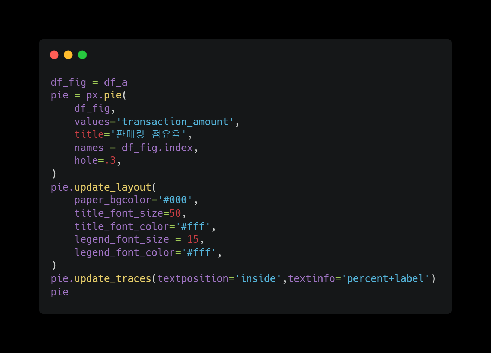
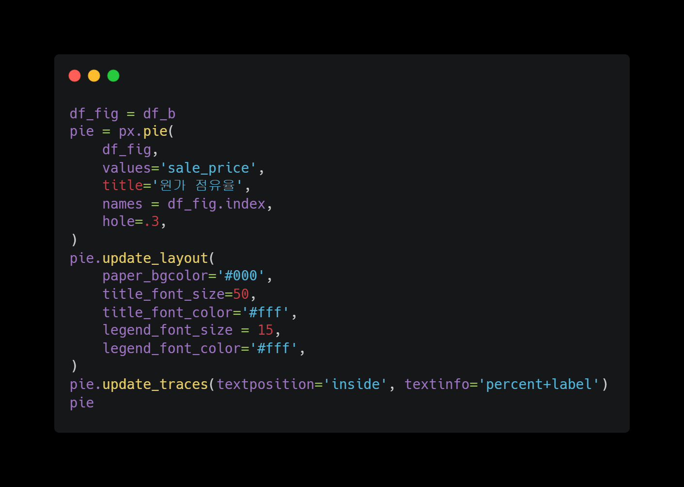
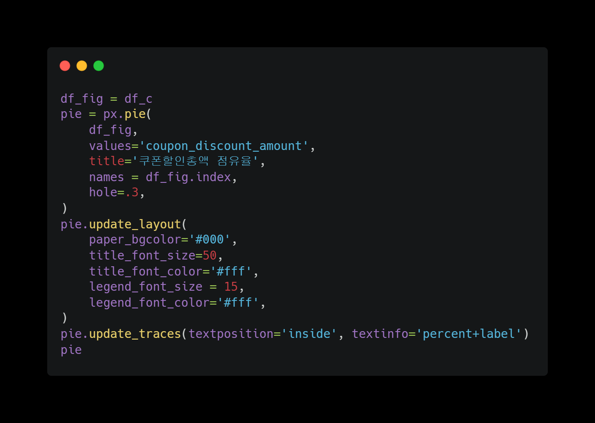
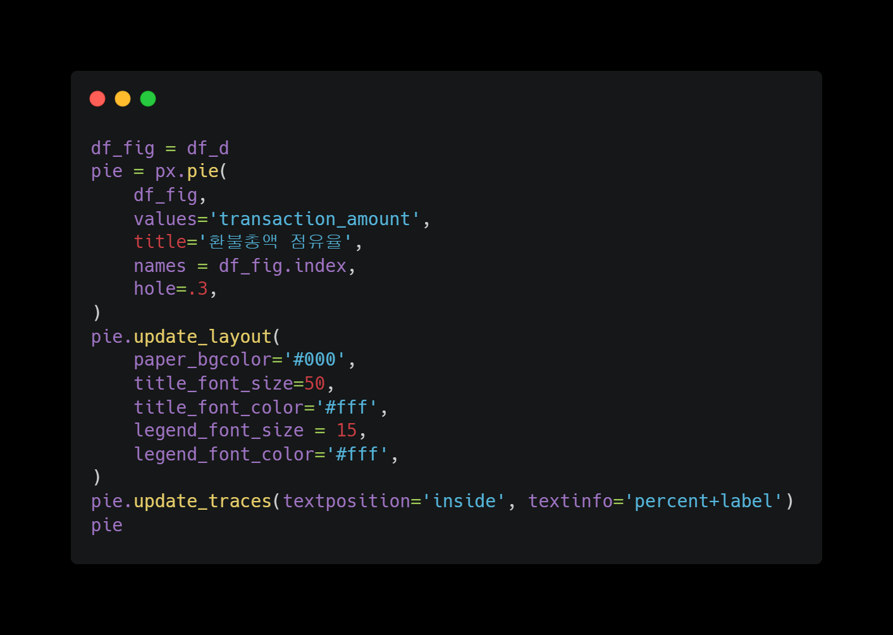
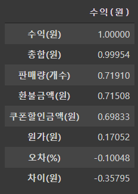
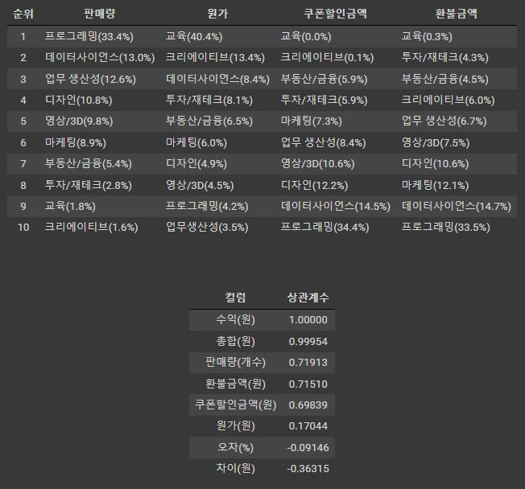
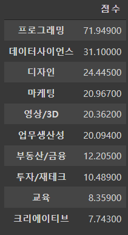

패스트캠퍼스의 상반기 데이터를 활용하여 EDA 진행하였습니다.


주제 : 신규 강사 채용에 대한 category 선정
- 분석하는 이유 : 각 분야(프로그래밍,디자인,금융 등) 강사 지원자가 100명씩 있다면, 누굴 뽑아야 이득일까?
- 분석 과정
1. 가설 식을 세운다
2. 변수의 점유율을 구한다
3. 가설 식의 타당성을 검토한다
4. 상관계수를 구한다
5. 각 category 점수를 구한다
6. 결과를 분석한다
결측치 처리 후


결측치 처리 후 데이터 확인
1. 가설 식을 세운다
-> 수익 = (판매량 x 원가) - 쿠폰할인총액 - 환불총액
- 가설 식을 세운 이유 :
1. category 선정을 위해서는 수익에 관련된 컬럼만 필요하다
2. 기존 데이터셋에서 수익과 관련없는 컬럼의 영향이 크다
3. 수익 측정에 필요한 컬럼만 걸러낼 필요가 있다
4. 걸러낸 컬럼의 타당성을 검토할 필요가 있다
5. 타당성 검토를 위해 수익(가설)식을 세웠다
2. 변수의 점유율을 구한다
-> 변수 = 판매량, 원가, 쿠폰할인총액, 환불총액
2.1 판매량의 점유율
범례에서 특정 카테고리를 클릭하시면 해당 카테고리를 제외한 결과를 볼 수 있습니다
2.2 원가의 점유율
범례에서 특정 카테고리를 클릭하시면 해당 카테고리를 제외한 결과를 볼 수 있습니다
2.3 쿠폰할인총액의 점유율
범례에서 특정 카테고리를 클릭하시면 해당 카테고리를 제외한 결과를 볼 수 있습니다
2.4 환불총액의 점유율
범례에서 특정 카테고리를 클릭하시면 해당 카테고리를 제외한 결과를 볼 수 있습니다
3. 가설 식의 타당성을 검토한다

위 표는 내가 세운 가설식(수익)과 실제거래총합(총합)을 비교하는 표이다
마지막 컬럼에 보면 '오차(%)'가 있다. 오차는 내가 세운 가설식과 실제수익이 얼마나 차이가 나는지를 보여주는 지표이다.
오차율(%)이 category마다 다르지만, 많아야 3.3%인 것을 알 수 있다. 이를 통해 나는 내가 세운 가설식이 타당성을 만족한다고 생각한다
4. 상관계수를 구한다
가설식을 통해 "수익"과 관련있는 상관계수를 구한다
우리가 봐야할 항목은 '판매량', '원가', '쿠폰할인금액', '환불금액'이다
판매량 : 0.71
원가 : 0.17
쿠폰할인금액 : 0.69
환불금액 : 0.71
5. 각 category 점수를 구한다
점유율 x 상관계수를 통해 점수를 구한다
위 순서대로 1순위 프로그래밍, 2순위 데이터사이언스, 3순위 디자인으로 정해진다
5. 각 category 점수를 구한다
점유율 x 상관계수를 통해 점수를 구한다
위 순서대로 1순위 프로그래밍, 2순위 데이터사이언스, 3순위 디자인으로 정해진다
주제 : 신규 강사 채용에 대한 category 선정
6. 결과 분석
1 순위 : 프로그래밍
2 순위 : 데이터사이언스
3 순위 : 디자인
4,5,6,7,8 순위 : 마케팅,영상/3D,업무생산성,부동산/금융,투자/재테크
9 순위 : 교육
10 순위 : 크리에이티브